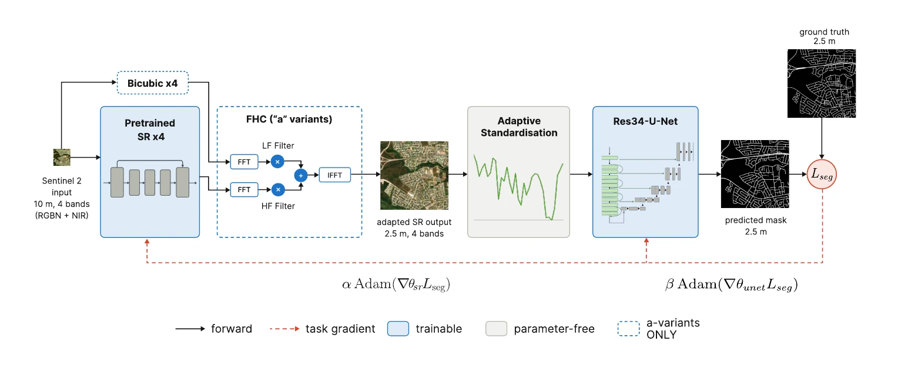
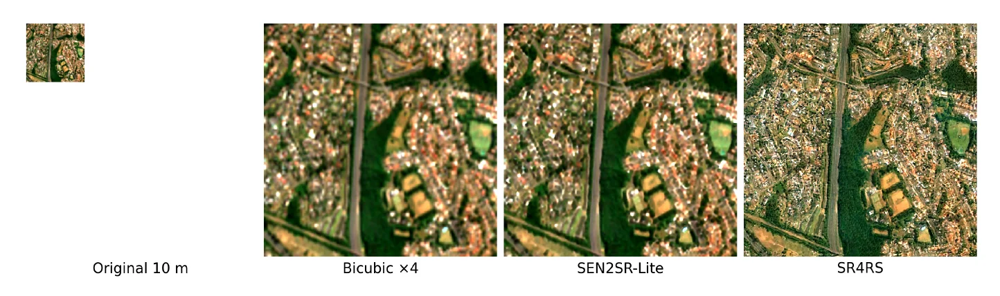
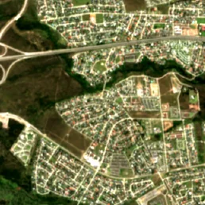
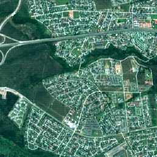
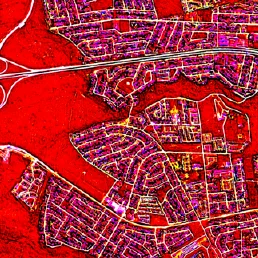
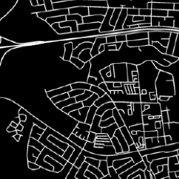

Task-Driven Super-Resolution+: Guiding Pretrained Super-Resolution to Enhance Road Segmentation from 10 m Sentinel-2 Imagery
Jing's thesis starts from a simple idea: our 10 m Sentinel-2 images are too coarse to segment roads accurately, so can we make them better? Jing fine-tuned a pretrained super-resolution model using only the road-segmentation loss, so that its output becomes more useful to the road detector. Along the way, it turned out that a 24.2 M-parameter U-Net is not needed: with SR4RS, a five-parameter logistic head reached the highest buffered F1 of any configuration, though its connectivity (APLS) is lower than the bicubic baseline and every jointly trained U-Net.
Supervisors: Patrick Marais and Jonathan P. Shock
Contribution
Jing's sub-project treats super-resolution not as a fixed preprocessing step but as a trainable part of the road extractor, guided only by road labels.
- TDSR-JT. Joint fine-tuning of a pretrained super-resolution model (SEN2SR-Lite or SR4RS) and a ResNet-34 U-Net using only the segmentation loss, with differential learning rates.
- Adaptive standardisation. An exponential-moving-average normaliser that keeps the U-Net's input statistics in step with the changing super-resolved output.
- Fourier constraint study. Crossed SEN2SR-Lite's Fourier-based hard constraint with both models to separate its effect from the choice of architecture.
- TDSR-LP-FT. Replaced the U-Net with a five-parameter logistic head (linear probe, then fine-tune) to test whether the super-resolution model alone can learn road structure.
- Loss and statistics. A pilot study of road-specific losses (GapLoss selected), bootstrap confidence intervals, exact Wilcoxon tests and Hochberg correction over nine test regions.
Goals and research questions
At 10 m, most roads are one or two pixels wide. Super-resolution should help, but earlier work found that pretrained super-resolution used as a fixed preprocessing step does worse than simple bicubic interpolation: the models are trained for visual quality or pixel reconstruction, not for finding roads. Retraining them needs high-resolution imagery, which is unavailable or out of date for most of South Africa. Jing therefore adapts pretrained models using road labels alone.
Research questions
- Can a pretrained super-resolution model be guided by road-segmentation supervision to produce outputs that improve downstream road extraction from 10 m Sentinel-2 imagery?
- How does task-driven adaptation affect the image fidelity and behaviour of the super-resolution model, and to what extent can architectural constraints preserve image-like outputs while retaining task performance?
- To what extent is a high-capacity downstream road extractor necessary once the super-resolution model has been adapted for the task?
Method


Key steps
- Input. Sentinel-2 red, green, blue and near-infrared bands at 10 m from ROSA, as 128 × 128 patches with flip and rotation augmentation.
- Super-resolve ×4 to 2.5 m. SEN2SR-Lite (CNN, 0.57 M parameters, reconstruction loss) or SR4RS (GAN, 11.8 M parameters), optionally with the Fourier constraint that keeps the bicubic image's low frequencies.
- Re-standardise. Adaptive standardisation tracks each band's mean and variance with an exponential moving average as the super-resolved output changes.
- Extract roads. A ResNet-34 U-Net (TDSR-JT) or a single 1 × 1 convolution with five parameters (TDSR-LP-FT).
- Train on the task loss only. GapLoss with separate learning rates for the two modules; 30 Optuna trials per configuration, then 100-epoch refits on three seeds.
- Evaluate. Buffered F1 at 3 px (7.5 m) tolerance, APLS and clDice, with bootstrap confidence intervals and Hochberg-adjusted Wilcoxon tests over nine test regions.
Results
| ID | Configuration | bF1 | bP | bR | APLS |
|---|---|---|---|---|---|
| Reference | |||||
| R0 | Bicubic ×4 + U-Net | 71.55 | 88.81 | 61.95 | 47.47 |
| SEN2SR-Lite | |||||
| R1a | Frozen SR + FHC | 71.30 | 88.36 | 61.88 | 44.91 |
| R1b | Frozen SR | 72.43 | 88.60 | 63.05 | 47.60 |
| R2a | TDSR-JT + FHC | 72.87 | 88.51 | 63.84 | 46.71 |
| R2b | TDSR-JT | 72.27 | 88.65 | 62.90 | 47.96 |
| RL2† | TDSR-LP-FT | 27.90 | 20.89 | 89.14 | 2.54 |
| SR4RS | |||||
| R3a | Frozen SR + FHC | 69.53 | 88.54 | 59.29 | 42.24 |
| R3b | Frozen SR | 70.26 | 87.01 | 60.85 | 45.27 |
| R4a | TDSR-JT + FHC | 72.43 | 86.03 | 63.88 | 47.25 |
| R4b | TDSR-JT | 72.80 | 89.62 | 62.96 | 48.38 |
| RL4 | TDSR-LP-FT (5-parameter head) | 73.20 | 86.75 | 65.12 | 45.74 |
† RL2 was unstable: two of three refits collapsed toward predicting road everywhere.
Visual results






Findings and limitations
What we found
- Frozen super-resolution does not beat bicubic. This replicates earlier work; frozen SR4RS even degrades segmentation (bF1 69.53–70.26 vs 71.55).
- Task-driven training recovers the loss. Joint training improves three of four matched configurations, with strong evidence for SR4RS; SEN2SR-Lite shows suggestive gains over bicubic.
- A five-parameter head can be enough. SR4RS with TDSR-LP-FT beats bicubic + U-Net on buffered F1 (adjusted p = 0.016) with about a third of the training time per epoch of SR4RS + U-Net.
- The Fourier constraint keeps images realistic but does not help the task. It preserves radiometric consistency, but gives no consistent bF1 gain, and APLS point estimates favour the unconstrained models.
- Pixel gains do not guarantee connectivity. The models with the best buffered F1 are not the best on APLS.
Limitations
- One geographic region and two super-resolution architectures, using RGB and NIR bands only.
- SEN2SR-Lite was unstable with the minimal head.
- Patches are processed independently, so confidence can drop at patch boundaries.
- Thresholds were chosen on training data, so some faint roads are lost at binarisation.
- Railways and other linear features are easily confused with roads at 10 m.